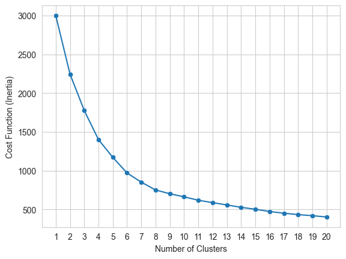

import pandas as pd
df = pd.read_csv("https://raw.githubusercontent.com/rtava/MLProject/master/posts/K_Mean/Mobile_dataset.csv")
df = df[['battery_power','int_memory','mobile_wt','ram']]In this blog post, I will discuss a straightforward system for categorizing the prices of used cell phones in an online store. The goal is to use the K-Mean method to allocate cell phones to different price categories based on their mobile specifications.
Data
I used the dataset from Kaggle. (data-set). The dataset provides the following information:
| Variable name | Description |
|---|---|
| battery_power | Total energy a battery can store in one time measured in mAh |
| int_memory | Internal Memory in Gigabytes |
| mobile_wt | Weight of mobile phone |
| ram | Random Access Memory in Megabytes |
df.head()| battery_power | int_memory | mobile_wt | ram | |
|---|---|---|---|---|
| 0 | 1043 | 5 | 193 | 3476 |
| 1 | 841 | 61 | 191 | 3895 |
| 2 | 1807 | 27 | 186 | 2396 |
| 3 | 1546 | 25 | 96 | 3893 |
| 4 | 1434 | 49 | 108 | 1773 |
Model Estimation
from sklearn.preprocessing import StandardScaler
import numpy as np
X = df.values[:,1:]
X = np.nan_to_num(X)
x_data = StandardScaler().fit_transform(X)To begin with, I set the number of clusters to 4 and then categorized cell phones based on their specifications.
from sklearn.cluster import KMeans
k_means = KMeans(init = "k-means++", n_clusters = 4,
n_init=12, random_state=42)
k_means.fit(x_data)
df['Cluster'] = k_means.labels_print("The value of cost function (K-mean Inertia) with 4 clusters is: %0.2f" % (k_means.inertia_))The value of cost function (K-mean Inertia) with 4 clusters is: 1399.57Optimal Number of Clusters
In this step, I calculate the “K-mean Inertia” for different numbers of clusters from 1 to 20, and plot the values. Based on the results, I can determine the optimal number of clusters to categorize cell phones.
import warnings
warnings.filterwarnings('ignore')
kmeans_per_k = [KMeans(n_clusters=k, random_state=42).fit(x_data)
for k in range(1, 21)]
inertias = [model.inertia_ for model in kmeans_per_k]import seaborn as sns
import matplotlib.pyplot as plt
sns.set_style("whitegrid")
a = sns.lineplot(x= range(1, 21), y = inertias)
b = sns.scatterplot(x= range(1, 21), y = inertias)
b.set_xticks(range(1,21))
b.set_xlabel("Number of Clusters")
b.set_ylabel("Cost Function (Inertia)")
plt.show();
I set number of cluster to 6
k_means = KMeans(init = "k-means++", n_clusters = 6,
n_init=12, random_state=42)
k_means.fit(x_data)
df['Cluster'] = k_means.labels_The following plot shows the relation between clusterring, internal memory, and ram.
import seaborn as sns
g = sns.scatterplot(data=df, x="int_memory", y="ram", hue="Cluster")
g.set_xlabel("Internal Memory")
g.set_ylabel("Random Access Memory")
plt.show();